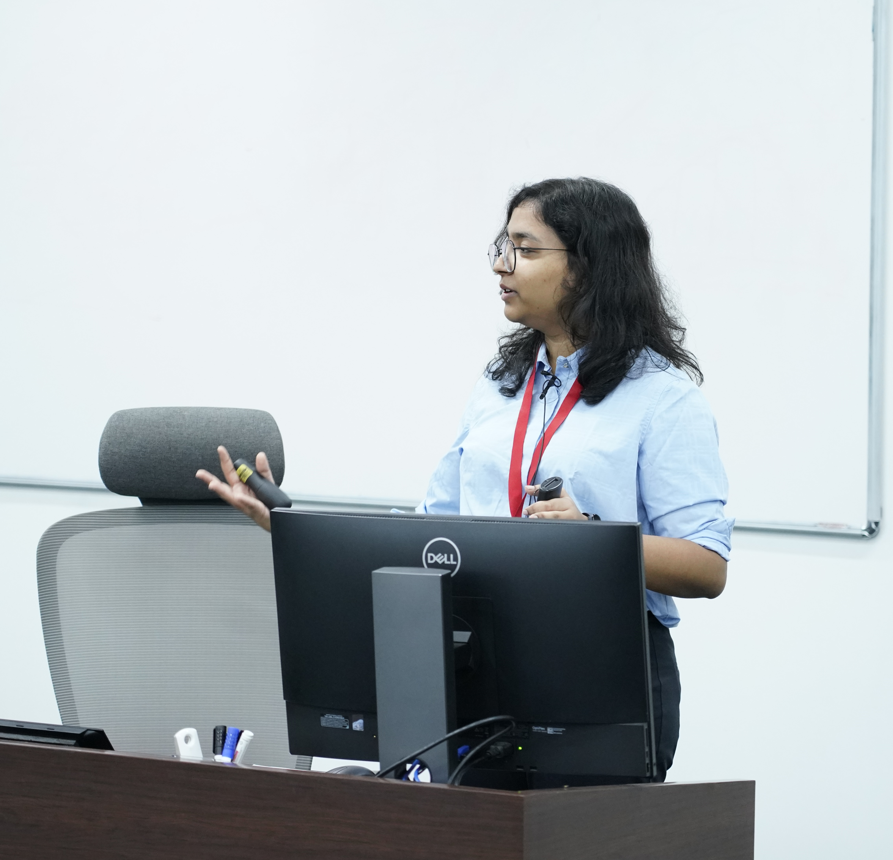

Research Intern
Department of Economic and Policy Research
Reserve Bank of India, Mumbai
Hi! I am an economist currently working as a Research Intern at the Reserve Bank of India. My work revolves around India's informal economy, firm productivity, local public finance, and the relationship between economic growth and sustainability. Prior to this, I worked at the Nation First Policy Research and Change Foundation, a Delhi based thinktank , where I contributed to policy research and impact evaluation, including an evaluation of the Jal Jeevan Mission. Across these projects, I work with household and firm microdata, administrative datasets, primary surveys, and geospatial data.
Beyond the Formal Grid: The Role of Panchayat Expenditure and
Infrastructure Quality on Rural Unorganised Firm Performance
with Subhadhra Sankaran, 2026 | PDF
The study uses ASUSE 2023-24 data, along with district-level development expenditure and village-level infrastructure indicators, to examine the drivers of the performance
of rural unincorporated proprietary enterprises across 21 states in India.
Examining Total Factor Productivity in India's Unincorporated Manufacturing Enterprises:
Stylized Facts and Determinants
with Gopal Krishna Roy, 2025 | PDF
The study uses ASUSE 2022-23 to find total factor productivity (TFP) using VAKL model and analyzed the impact of self-reported
operational problems such as demand shrinkage, credit issues and 20 other indicators
on productivity.
The Himalayan Tightrope: Balancing Growth and Sustainability amidst Ecological Sensitivity
with Ritwiz Sarma, 2025 | PDF
The study uses high-resolution town- and village-level satellite data to examine the relationship between infrastructure development, environmental sustainability, and growth
in the ecologically sensitive Himalayan biome. It builds a novel two-decade dataset covering five economic and environmental indicators and finds significant spatial and temporal
heterogeneity, with implications for sustainable development and decentralized policy-making.
Strengthening the Rural Water Service Paradigm: A Policy Evaluation of Jal Jeevan Mission and Pathways for Sustainable Delivery
NFPRC Foundation, 2026 | Link
Policy evaluation of the Jal Jeevan Mission using primary survey data from 3,065 households across 12 districts in six states. Examines programme implementation,
service reliability, tap functionality, water quality, and household welfare outcomes, with recommendations for strengthening source sustainability, operations and maintenance
financing, local governance, and long-term rural water service delivery.